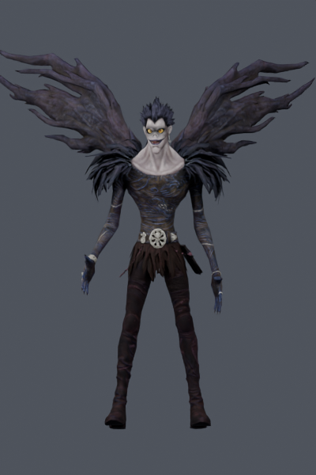

KIRA · DEATH NOTE
Ryuk no ambiente
Escolha um ponto no piso. Depois de posicioná-lo, você pode se aproximar, se afastar e circular ao redor dele.
Verificando AR deste navegador…
Abrir AR do Android
Abrir AR no iPad / iPhoneOs visualizadores nativos posicionam o modelo no espaço. Caderno, fumaça da página, recorte da pessoa e saída por punho pertencem ao modo com pessoa.
Este modo usa rastreamento do ambiente. O recorte de pessoas não está disponível aqui; movimentos rápidos, pouca textura ou iluminação fraca podem prejudicar a estabilidade.
Reconhecer a capa · Modo com pessoa
Se o AR não abrir
No Android, confira se o Google Play Services para AR está instalado e atualizado. O Chrome também deve estar atualizado. Nenhuma página consegue ativar suporte ausente no aparelho.
A abertura nativa depende dos serviços instalados; se retornar para esta página, a câmera AR não foi confirmada.